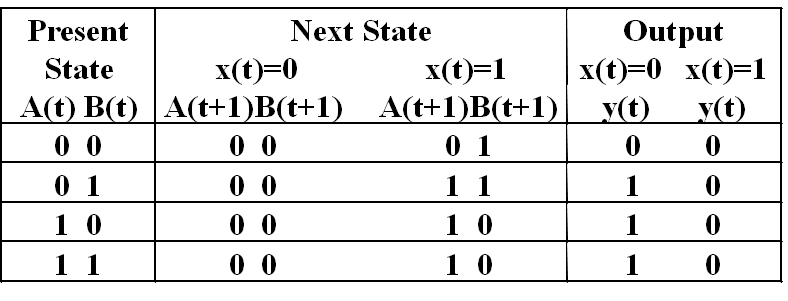
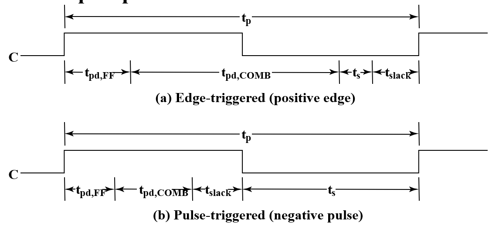

Chapter 4 Sequential Circuits
Chapter 4 Part 1
Sequential Circuits Introduction
时序电路介绍
- 组成：
- 现代复杂电路设计大多使用同步
- Storage elements: Latches or Flip-Flops
- 组合逻辑：
- Implements a multiple-output switching function
- Inputs are signals from the outside.
- Outputs are signals to the outside.
- Other inputs, State or Present State are signals from storage elements.
- The remaining outputs,Next State are inputs to storage elements.
- Combinatorial Logic:
- Next state function(次态方程): Next State = f(Inputs, State)
- Output function (Mealy): Outputs = g(Inputs, State)
- Output function (Moore): Outputs = h(State)
时序电路分类
- 同步(Synchronous)：在某几个时间检测，什么时候观测输入和改变状态仅与时间信号有关。所有元件在时钟模块控制下同时更新。同步抽象使复杂的设计变得易于处理！
CPU：同步
使用时钟脉冲作为存储元件输入信号的同步时序电路称为钟控时序电路(clocked sequential circuit)
时钟模块：
always@ (posedge,clk) begin //只要时钟信号向上变动，就会执行该模块 ---> 只在特定情况检测 同步
end
- 异步(Asynchronous)：在任何时间都可以改变，观测输入与状态，即时响应。
离散事件仿真
- 门用理想化公式处理输入，并有一个固定的延时
- 每当有输入的改变都做出对应输出
- output结果和input之间有固定延时
- output改变的一瞬间，output驱动的所有输入都改变，即忽略传输时间
Latch
- 错误由于$S$变化传到反相器输出有延迟，因此出现$S$由1变0后，$\overline{S}$并未立即由0变1，使得两者都是0，输出也变成了0
将A与Y相连，从而得到一个时序电路

- S为1时，$Y=B$，S为0时，B不改变Y，因此Y可以储存B的值
再加一个非门
- 优点：电路简单
- 缺点：频率不精确 ，即使如此之后仍然会出现上上上图中的glitch
Basic (NAND) $\overline{S} – \overline{R}$ Latch 锁存器
低电平有效

- 输入00是禁止的
Basic (NOR) S – R Latch
高电平有效，因此两个都高时无效处于未定义
Clocked S-R Latch
- C为0，锁存器两个输入都为1，不改变值；C为1，输入相当于$\overline{S},\overline{R}$.
改进：使得没有非法情况——D Latch

- 利用传输门的D锁存器
传输门：既可以传送数字信号又可以传输模拟信号的可控开关电路
Flip-Flops
The Latch Timing Problem
- 只要 C = 1，Y 的值就会继续变化！即空翻现象
- 所需行为：Y 在每个时钟脉冲中仅更改一次
- 解决方案是断开存储元件内从 Y 到 Y 的闭合路径，使用触发器（flip-flop）
- a master-slave flip-flop
- an edge-triggered flip-flop
S-R Master-Slave Flip-Flop
- 左主(master),右从(slave)
- C=1观测输入，C=0输出改变
- 假设S=1,R=0，C由0变1，主锁存器对应Q为1；C再变0，从锁存器接收外部输入，即Q与$\overline{Q}$，对应输出Q为1
- C在任何状态，S,R输入端都不可能直接改变输出状态
- 只有当clock完成一次$0\rarr 1\rarr 0$变化的周期后，输出Q才会改变
- 问题：clock为1时，由于外部输入变化带来的累积效应，使得结果可能错误，称为1‘s catching 一次性采样
- 触发器输出的变化会因脉冲宽度而延迟，从而使电路变慢
- 当 C = 1 时，允许 S 和 R 更改，假设 Q = 0，S 变为 1，然后变回 0，R 保持在 0 。主锁存器设置为 1 ，1 被转移到从锁存器，但我们希望传输的是0
- 假设 Q = 0，S 变为 1 并返回 0，R 变为 1 并返回 0 ，主锁存器设置为0，然后复位 0 被传输到从锁存器
- 即触发器会因为一瞬间的变化而值发生改变
Edge-Triggered Flip-Flop 边沿触发器
- 主锁存器变为D锁存器
- 只看边沿情况输入决定输出，其他时候输入不影响
- D触发器解决SR触发器的一次性采样问题是因为D触发器没有保持功能
上升沿触发器（Positive-Triggered Flip-Flop）
Standard Symbols for Storage Elements
- 主从触发器输出侧的表示不允许输入改变。
- 若电路中存在不同边沿触发器，若想同步触发，正确方式应该是采用主时钟产生器，使其产生同步正向和负向脉冲，否则会有延迟
- 通过门控时钟使得时钟脉冲失效会导致延迟，这种延迟称为时钟偏移（clock skew）
Actual Circuit of Edge-Triggered D Flip-Flop
6个与非门，成本较低
Direct Input
- 实现触发器的异步置位的输入称为直接置位(direct set)或预置(preset)，实现异步复位的输入称为直接复位或清零(clear)
- 若使用同步赋初值：设置D
- 低电平有效
Filp-Flop Timing Parameters
- $t_s$：setup time，建立时间
根据定义, $t_s$指在采样前触发器需要的准备时间。对于主从触发器，在信号处于上升沿的时候 S 部分的输入是不能改变的，否则可能有一次性采样问题，因此在信号处于上升沿都是触发器的准备时间。这也是为什么现在我们普遍使用边缘触发器的原因。 对于 D 触发器而言，不要卡在时钟边沿改变 D 的输入，而是在时钟改变之前就进行，这样 D 触发器才能有足够的准备时间。
- $t_h$：hold time，触发边沿后过一段时间输入才能改变。现在多数触发器$t_h$可以是0
-
$t_w$：clock pulse width
-
$t_{px}$：propagation delay. Measured from clock edge that triggers the output change to the output change.
-
$t_{PHL}$ :High-to-Low $t_{PLH}$ :Low-to-High $t_{pd}$:max ($t_{PHL}$,$ t_{PLH}$)
-
对边沿触发器，$t_s\leq t_w$ 对主从触发器，$t_s=t_w$
Other Filp-Flop
J-K Filp-Flop
-
与SR类似，但输入11时触发器为求反(opposite state)，即没有非法状态
-
Implementation by D Flip-Flop（以正边沿触发器为核心避免一次性采样）：
- J=0，K=0，Q输出送给D，保持
- J=0，K=1，上下全disable，D置0，reset
- J=1，K=0，D输入为$\overline{Q}+Q$，为1
- J=1，K=1，$\overline{Q}$送给D，求反
T Flip-Flop
单输入T，T=0保持，T=1求反
Reset (asynchronous or synchronous) essential 需要异步控制赋初值
Analysis
- 输入:$x(t)$,输出:$y(t)$,状态:$A(t),B(t)$
a important equation:$Q=D$
Stable Table
有限状态机
- Alternate State Table 二维表：

State Diagrams
The sequential circuit function can be represented in graphical form as a state diagram with the following components：
- A circle with the state name in it for each state
- A directed arc from the Present State to the Next State for each state transition
- A label on each directed arc with the Input values which causes the state transition, and
- A label:
- On each circle with the output value produced, or
-
On each directed arc with the output value produced.
-
Moore type output depends only on state(输出画在圈里面) 输出与输入无关 Mealy type output depends on state and input(输出画在有向弧上) 输出与输入有关
- Example：/左侧输入，右侧输出，由现态指向次态，下例为Mealy型
Equivalent State Definitions
两个状态等效，即对任意一种输入都产生相同的输出与次态
- 例：下图中S2与S3
因此可以改写
然后发现S1与S2等效
此时不再有可以合并的
Moore and Mealy Models
Sequential Circuits or Sequential Machines are also called Finite State Machines (FSMs). Two formal models exist:
Moore Model
- Outputs are a function ONLY of states.Usually specified on the states.
- State Table
Mealy Model
- Outputs are a function of inputs AND states.Usually specified on the state transition arcs.
- State Table
混合型写法
指向同一个次态的输出相同时把输出放进圈
One more example
模5计数器，若从0开始，则会0~4循环变化，但若外部干扰产生5-7，下次仍会切换回0-4，从而不会出现死锁与错误。


Only states reachable from the reset state 000 are used: 000, 001, 010, 011, and 100. The circuit produces a 1 on Z after four clock periods and every five clock periods thereafter: 000 -> 001 -> 010 -> 011 -> 100 -> 000 -> 001 -> 010 -> 011 -> 100 …
Circuit and System Level Timing
-
New Timing Components
-
$t_p$ clock period - The interval between occurrences of a specific clock edge in a periodic clock
-
$t_{pd,COMB}$ :total delay of combinational logic along the path from flip-flop output to flip-flop input
组合逻辑在触发器输出到触发器输入路径上的总延迟
-
$t_{pd,FF}$：触发器总延迟
-
$t_{slack}$ ： extra time in the clock period in addition to the sum of the delays and setup time on a path 可以是正数，也可以是负数 所有路径上的必须大于或等于零才能正确操作 Must be greater than or equal to zero on all paths for correct operation

-
Timing Equations： $$ t_p=t_{slack}+(t_{pd,FF}+t_{pd,COMB}+t_s) $$ For $t_{slack}$ greater than or equal to zero, 时钟脉冲周期必须不超过下式 $$ t_p\geqslant \max(t_{pd,FF}+t_{pd,COMB}+t_s) $$ for all paths from flip-flop output to flip-flop input
-
Calculation of Allowable $t_{pd,COMB}$
因此更多使用边沿触发器
Chapter 4 Part 2
Sequential Circuit Design
Formulation: Finding a State Diagram
A state is an abstraction of the history of the past applied inputs to the circuit (including power-up reset or system reset).
将文本化的需求变为用状态机描述（整个电路经过哪些状态？每个状态之间由哪个输入进行驱动？输出是什么？）
A Example: Sequence Recognizers 序列识别
- A sequence recognizer is a sequential circuit that produces a distinct output value whenever a prescribed pattern of input symbols occur in sequence, i.e, recognizes an input sequence occurrence.
需要找到指定序列的头尾
To develop a sequence recognizer state diagram:
- Begin in an initial state in which NONE of the initial portion of the sequence has occurred (typically “reset” state).
- Add a state that recognizes that the first symbol has occurred.
- Add states that recognize each successive symbol occurring.
- The final state represents the input sequence (possibly less the final input value) occurrence.
- Add state transition arcs which specify what happens when a symbol not in the proper sequence has occurred.
- Add other arcs on non-sequence inputs which transition to states that represent the input subsequence that has occurred.

状态等效
- 完全确定状态表： 状态表中的次态和输出都有确定的状态和确定的输出值。
-
等效状态：设状态S1和S2是完全确定状态表中的两个状态,如果对于所有可能的输入序列，分别从状态S1和状态S2出发，所得到的输出响应序列完全相同，则状态S1和S2是等效的，记作(S1, S2), 或者说，状态S1和S2是等效对。等效状态可以合并。这里“所有可能的输入序列”是指长度和结构是任意的，它包含无穷多位，且有无穷多种组合。
-
状态等效的三种情况：首先输出相同，其次或次态相同，或次态交错，或次态循环
$S_i$与$S_j$等效，$S_k$与$S_l$等效
-
隐含表化简
-
作隐含表
- 顺序比较，寻找等效状态对
- 状态对等效，打“√”；
- 状态对不等效，打“×”；
- 状态对是否等效需进一步检查，则标记次态对。 进一步检查指输出相同但不能判断次态是否相同
- 进行关联比较，确定等效状态对
- 由于CD、DE不等效，所以DG不等效，画斜线标志
- 处于循环链中的每一个状态都是等效状态对
状态分配
-
基本原则：一般情况下，第一条原则较为重要，需优先考虑，其次要考虑由前三条原则得到的应分配相邻代码的状态对出现的次数，次数多的状态对应优先分配相邻的二进制代码。
-
在相同输入条件下具有相同次态的现态，应尽可能分配相邻的二进制代码 （较为重要）
- 在相邻输入条件，同一现态的次态应尽可能分配相邻的二进制代码
- 输出完全相同的现态应尽可能分配相邻的二进制代码
- 最小化状态表中出现次数最多的状态或初始状态应分配逻辑0
注：（4）中4个状态出现次数都一样多，随意选择一个分配为逻辑0即可
时序电路设计
- 明确需求
-
状态图
-
状态表
- 状态转移方程
- 工艺映射
- 电路验证